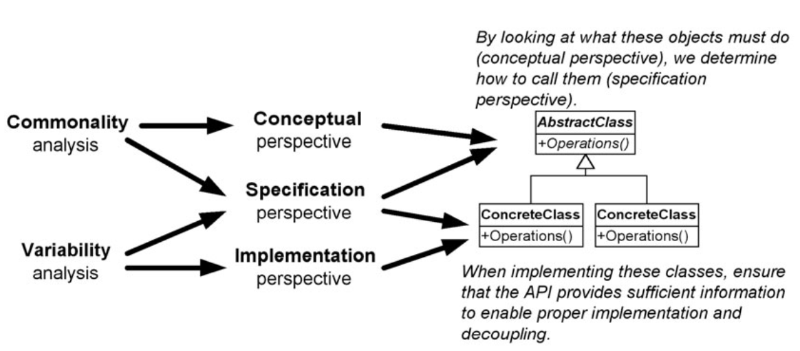
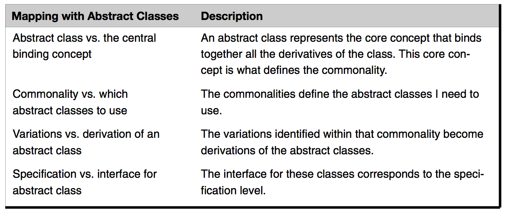

Expanding Our Horizons
Overview
- Object
- Encapsulation
- Inheritance
- Handling variation
- Commonality and variability analysis
- Abstract class and its derived classes
Objects: Traditional view and new view
Traditional View
- Data with methods - smart data
- too narrow from implementation perspective
Broad View
- From conceptual perspective
- an object is an entity that has responsibilities (責任), these responsibilities define the behavior of the object. Or an entity that has specific behavior (特定行為).
Focus on intention/motivation not implementation
This view enables us to build software in two steps:
- Make a preliminary design without worrying about all the details involved.
- Implement the design.
The reason this works is that we only have to focus on the object’s public interface — the communication window through which I ask the object to do something.
Hiding implementations behind interfaces essentially decouples them from the using objects.
Encapsulation: Traditional view and new view
Traditional View
- data hiding
Broad View
- any kind of hiding
- Implementations (data, methods..)
- Drived classes (Encapsulation of type is achieved when there is an abstract class with derivations (or an interface with implementations) that are used polymorphically)
- Design details
- Instantiation rules (ex. creational patterns)
Advantage
It gives us a better way to split up (decompose) our programs. The encapsulating layers become the interfaces we design to. (封裝層成為設計需要遵循的介面)
By encapsulating different kinds of subclasses (encapsulation of type), we can add new ones without changing any of the client programs using them. (GoF typically means when they mention encapsulation)
Inheritance
Traditional View
- reuse of classes
- achived by creating classes and then deriving new (spcialized) classes bases on these base (generalized) classes
Broad View
- using inheritance for specialization, however
- can cause weak cohesion
- reduces possibility of reuse
- does not scale well with variation
- to classify classes as things that behave the same way. (placeholder)
Find What Is Varying and Encapsulate It
Consider what should be variable in your design. This approach is the opposite of focusing on the cause of redesign. Instead of considering what might force a change to a design, consider what you want to be able to change without redesign. The focus here is on encapsulating the concept that varies, a theme of many design patterns. – GoF, Design Patterns
More about GoF’s Encapsulation
- Design Patterns use inheritance to classify variations in behaviors.
- Hiding classes with an abstract class or interface — type encapsulation.
- Containing a reference of this abstract class or interface type (aggregation) hides these derived classes that represent variations in behavior.
- In effect, many design patterns use encapsulation to create layers between objects.
Containing variation in data vs containing variation in behavior
Handling variation in data
- Have a data member that tells me what type of movement my object has.
- Have two different types of Animals (both derived from the base Animal class) — one for walking and one for flying.
Handling variation in behavior with objects
Using objects to contain variation in attributes and using objects to contain variation in behavior are very similar. Don’t afraid.
Commonality and Variability
Identify where things vary (commonality analysis) and then identify how they vary (variability analysis).
Commonality analysis is the search for common elements that helps us understand how family members are the same.
Variability analysis reveals how family members vary. Variability only makes sense within a given commonality.
Ex. Whiteboard marker, pencil, ballpoint pen
- Commonality: writing instrument
- Variability: material to write, shape..
Commonality and Variability and Abstract class
Commonality analysis seeks structure that is unlikely to change over time, while variability analysis captures structure that is likely to change. Variability analysis makes sense only in terms of the context defined by the associated commonality analysis. In other words, if variations are the specific concrete cases in the domain, commonality defines the concepts in the domain that tie them together. The common concepts will be represented by abstract classes. The variations found by variability analysis will be implemented by the concrete classes.
Relationship between Commonality and Variability, perspectives, and abstract classes

Benefits of using abstract classes for specialization

Two-Step Procedure for Design
Ask yourself:
- When defining an abstract class (commonality):
- What interface is needed to handle all the responsibilities (core concepts from the conceptual perspective) of this class?
- When defining derived classes:
- Given this particular implementation (this variation), how can I implement it (variation) with the given specification?
Take away
Think object-oriented in a broad way.
- Object: an entity that has responsibilities (specific behavior)
- Encapsulation: any kind of hiding (instantiation rule, type..)
- Inheritance: use for specialization and classify classes as things that behave the same way.
Find what is varying and encapsulate it (in behavior).
Commonality, variability and abstract class: use inheritance to classify variations in behaviors.